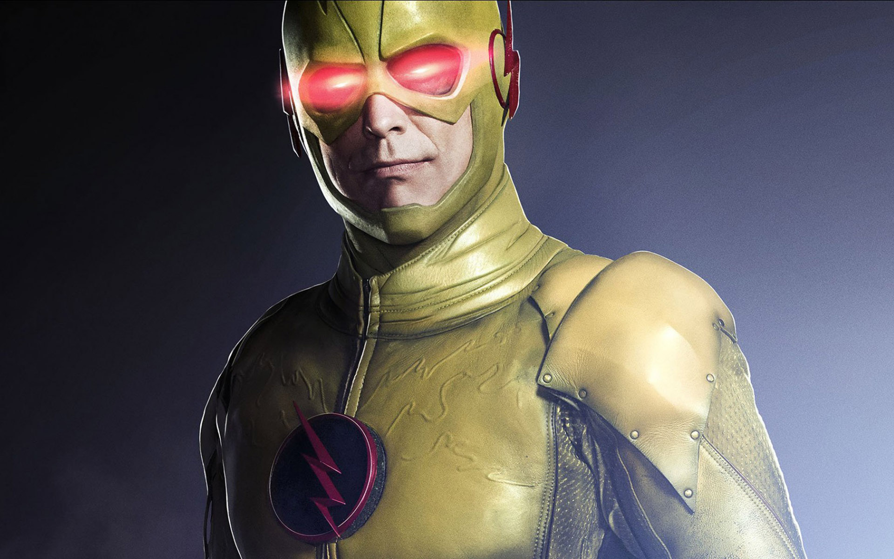
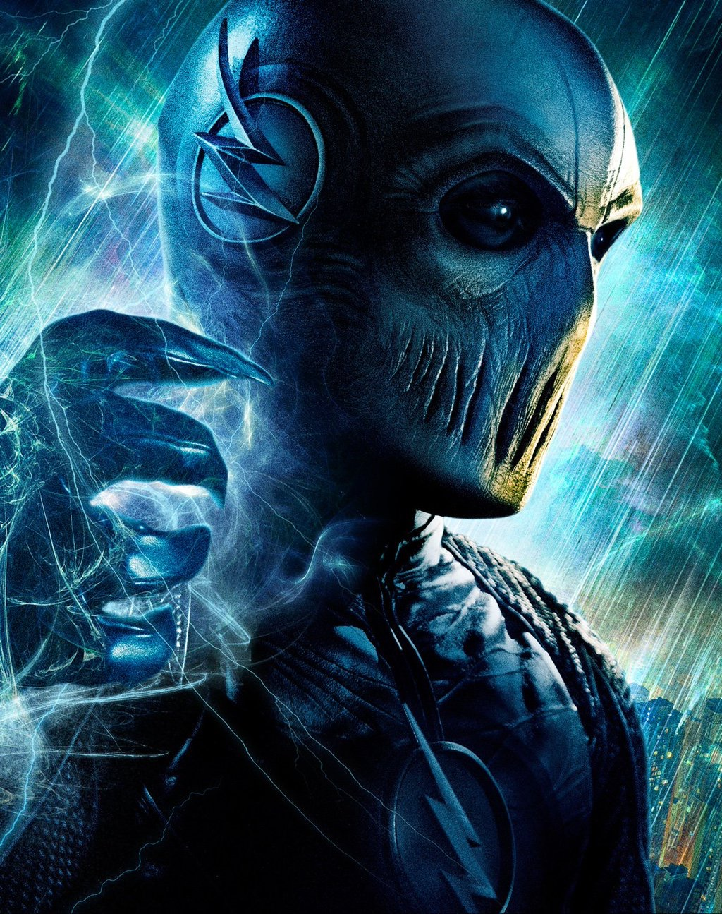

拥有神速力的人
巴里·艾伦(Barry Allen)
<
Barry Allen在11岁的时候，他的母亲死于一次离奇的恐怖事故，而他父亲更被错误指认为凶手，而他父亲的挚友，警探Joe West领养了他。现在Barry Allen已成为一个聪明﹑上进﹑讨喜的CSI鉴证分析员，与此同时他为了调查母亲死亡的真相，于是追踪起各种都市传说，也同时见识了先进的科技。在一次事故中，Barry Allen被神秘的闪电击中，从此也发现自己的身体发生了惊人的变化……
第一季Boss:逆闪电（Reverse-Flash） 真实姓名:Dr. Edward Clariss

艾尔伯德·斯旺出生于25世纪的未来，那时超级英雄已经成为了历史，供科学家研究探索。 斯旺十分崇拜21世纪的超级英雄闪电侠，为了解开其能力的来源-神速力的奥秘，他废寝忘食的进行研究。凭借对闪电侠的历史与神速力的深入研究，斯旺得到了"极速教授"的称号。 即使成为了神速力研究的权威，斯旺仍无法触碰到神速力的本质。此时来自20世纪的一个时间囊坠毁在25世纪的中城，其中装有闪电侠的一件制服。凭借制服上残存的速度能量，斯旺成功将其复制增强。 穿上制服的斯旺拥有了超级速度。他将制服染成了与闪电侠制服相反的颜色，成为了超级罪犯--逆闪电。
第二季Boss:极速（ZOOM）

亨特·佐勒蒙/极速作为主要反派对手出现在《闪电侠》第二季中，由泰迪·西尔斯扮演，他的伪装的声音由托尼·托德配音。这个版本，他来自Earth-2，穿着全黑色服装，戴着全罩式面罩，指套上有爪形器具。他是在奔跑时能产生蓝色闪电的极速者。Earth-1的非转化人的佐勒蒙也短暂出现，也由西尔斯扮演。[